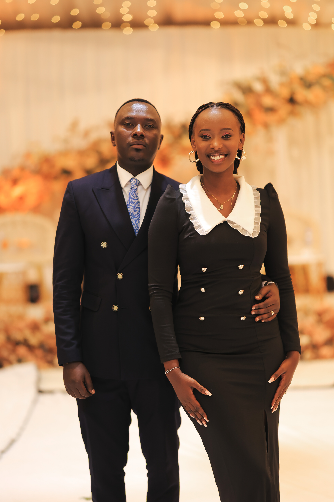

My Work



Welcome to my portfolio. I specialize in portrait, nature, and event photography.
Hey, I’m Brian. I’m a photographer based in Kigali, Rwanda, with a love for capturing real moments and honest emotion. I create soulful, timeless images that feel as real as your love — authentic, artistic, and deeply felt. My approach is simple: be present, be genuine, and let you be you. I quietly blend into your day, allowing space for natural connection and emotion to unfold. Couples often say it felt like having a friend there, someone who understood their story, not just documented it. I want you to live your day fully, not perform it. Because your wedding is more than just a day. It’s the beginning of one of life’s most meaningful journeys. I’m passionate about capturing life’s most cherished moments. The laughter, the tears, the stillness, the joy. Every image I create is a blend of art and emotion, designed to be timeless and deeply personal. I believe the most beautiful photos come from real connection, where love is felt, not posed. And when you look back at your photos, I want you to feel them. The warmth, the movement, the atmosphere. Like you’re right there again, holding it all close. This isn’t just about beautiful photos. It’s about preserving how it all felt. As the founder of our team, I lead with heart, intention, and a strong editorial eye. Over the years, I’ve become known not only for my timeless style but also for inspiring other photographers to find purpose through storytelling. It would be an honour to be part of your day and help you hold on to the moments that matter most, forever.